What repoctl writes on a terminal: state marks, colours, text layout, the output rules of the two streams and the terminal-only calm rules. One frame for each main command shows the rules on the story data: run r-20261102-1750-a3f and publish p-20261103-1412-5e1.
-v shows all rows. Scripts use --json.Next: line.repoctl help TOPIC.repoctl gives three go-clikit parts its own marks, words and colours:
| Output | go-clikit part |
|---|---|
| Progress displays: tree, counter, plain lines | progress/display |
| Tables | cliout |
| Doctor text | doctor.Write |
The form of an error line and a hint is in CLI reference: error messages. The JSON documents are in Machine contract.
The marks cover the node states, the plan actions and the check results. The node words have one definition for all surfaces (Build: node states). Without a UTF-8 locale, repoctl writes the ASCII mark.
| State | Mark | ASCII | Colour | Meaning |
|---|---|---|---|---|
| waiting | ◌ | . | none | A dependency of the node is not done. |
| queued | ○ | o | none | All dependencies are done. The node waits for a job slot. |
| running | ▸ | > | copper | The node runs in mock. Only live displays show it. |
| ok | ✓ | + | none | The node or the step ended without an error. |
| failed | ✗ | x | red | The node, the step or a required check failed. |
| blocked | ⊘ | / | amber | A dependency failed. The node did not start. |
| canceled | ⊖ | ~ | none | A human, a signal or --fail-fast stopped the node. |
| build (plan action) | ◆ | # | none | The plan builds the node. |
| current (plan action) | ≡ | = | none | The commit of the node is in latest. |
| staged (plan action) | ● | * | none | A run built the node for this lock. Nobody published it. |
| skip (plan action) | – | - | none | The node is not selected and not needed. |
| warning | ! | ! | amber | A check or a plan row needs a step from the human. It does not stop the command. |
Each colour has one meaning:
| Colour | Meaning | Used for | SGR (16 colours) |
|---|---|---|---|
| red | It failed, or it blocks the task of this command. | ✗, failed, required, error: | 31 |
| amber | Do a step. It does not fail the task by itself. | ⊘, !, blocked, behind, retiring, ahead, kept | 33 |
| copper | Work under way. | ▸, running, the elapsed time of a live tree | 36 |
| bold | The name of a block, the command to copy, a question. | step names, the command after run: | 1 |
| dim | Secondary text. | keys, durations, paths, note:, hint:, passed doctor checks | 2 |
States that need no action have no colour: ok, current, staged, skip, waiting, queued, canceled, same, in-sync, up-to-date and info. repoctl uses the 16 basic colours, so the theme of the terminal gives the shade on a light and on a dark background. The frames show the shades of the repoctl palette.
NO_COLOR (any value), --no-color and TERM=dumb turn off colour, bold and dim. The marks stay, because they are text.…. Tables do not cut a cell, so a pipe gets full rows.DIR@TARGET. A commit has 7 hex digits. A snapshot digest has 4 hex digits (sha256:9d07…). A key fingerprint shows in groups of 4, or as its last 8 digits (…41D8 0B6E).4.2s, 26s, 6m53s, 41m07s, 1h12m. The elapsed time of a live tree: 11:02.4. A plain line starts with [m:ss]. Times of day: 17:50. Dates: 2026-11-02.[m:ss] mark path: text. The parts of the path use ›, or > without a UTF-8 locale.The output rules decide which stream gets a line, what the default output shows, and how a command ends.
--json one JSON document without colour. Progress never changes it.note: and warning: lines, log lines, summary line, error line. Then come 0 to 3 hint: lines or one Next: line. A confirmation question also goes to standard error.--progress auto (the default, REPOCTL_PROGRESS) draws the tree when standard error is a terminal, and plain lines when it is not. In a pipe or a file, plain lines have no colour and no mark.--json does not change the progress. In a pipe or in CI, use --progress plain or --progress none for a clean standard error.termtext escaping before repoctl writes it.The environment variables are in Configuration: environment variables.
Human output follows the calm rules (Web UI: calm rules). A result table shows the exceptions and folds the normal rows into one totals line with a count for each state. Example: 11 packages: 9 in-sync, 1 ahead, 1 in tree (-v shows all).
7 current: munge rocm-smi … in plan. Thus "all fine" and "nothing checked" do not look the same.-v shows all rows. Scripts do not parse the text. They use --json, which always has all rows.With --json, a command writes exactly one JSON document to standard output: the envelope (Machine contract: envelope). Each command block of the CLI reference names its kind (kinds).
hint: WHAT TO DO. run: CMD tells what to do about a finding in this output: an error or a warning. Static help goes to repoctl help TOPIC.Next: line (error messages).Next: CMD gives the one next step of the normal path. status computes it from the state and writes it as its last line.Next: line at the end. init, migrate, sign add, sign deployed and a prune dry run also end with it.--json, the step is the field next (kinds).The calm rules of the web UI apply to the terminal. Web UI: calm rules gives the terminal form of each shared rule. These rules apply only to the terminal:
| Rule | In the terminal | Frames |
|---|---|---|
| Fixed end of a failed command | The end has one form: summary line, error line, hints. A command that succeeds can end with one Next: line instead (hint and Next lines). | build-failed, status |
| Quiet live output | Plain lines write a line when a step starts or ends, when a node fails and when a count changes. Without a change, they write one keep-alive line each 60 s. | build-plain |
| Short log excerpts | For a failed node, the excerpt starts 5 lines above the first error and ends at the end of the node log. The INFO: lines of mock fold to a count. | logs |
The frames below follow these rules. Each frame is a standalone page in mockups/term/, 120 columns wide, in the light and the dark theme.
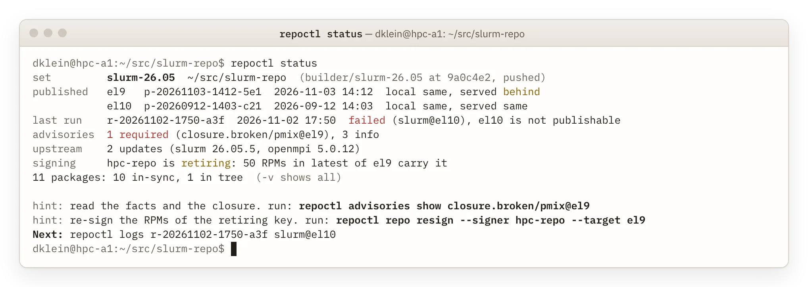
The block of repoctl status shows only lines with a finding:
-v adds the store, the mock configs, the check line, the staging line and all package rows.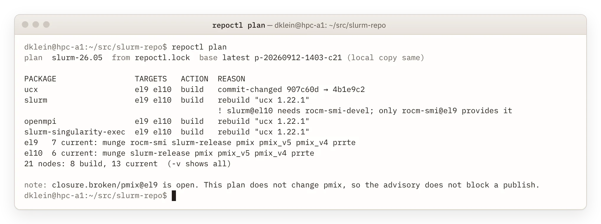
repoctl plan merges and folds rows (actions and reasons: Build: plan):
dep.not-for-target is under the slurm row, because it applies only to slurm@el10.closure.broken/pmix@el9 does not block a publish of this plan.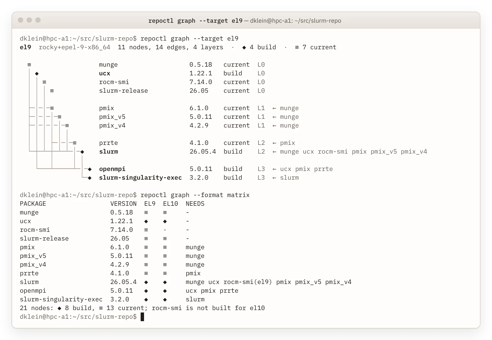
The text form of repoctl graph is a lane graph, as git log --graph draws it (the graph: Build: graph):
← munge ucx …), so the graph is clear without the lanes and in a screen reader.repoctl help graph.--run RUN shows the node states of a run with the same marks.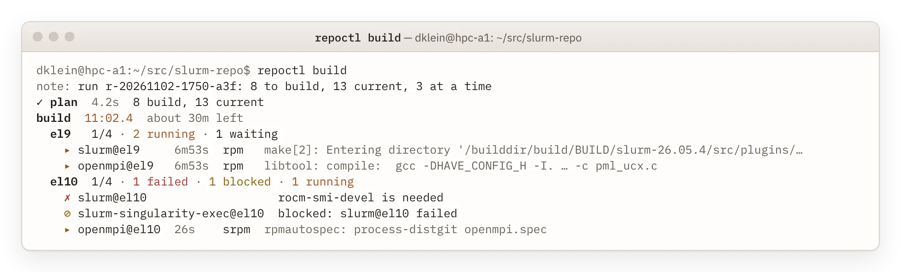
In the live tree of repoctl build, each target is a step with its counts (the run: Build: run):
--progress counter writes the same counts on one line.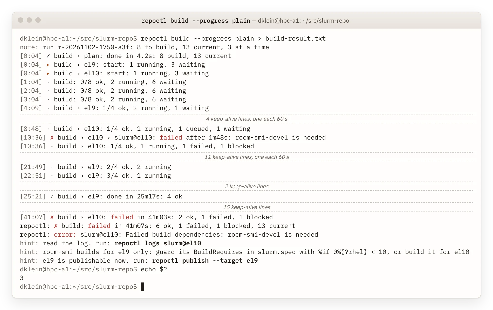
Plain lines are for a CI log (quiet live output). -v adds one line per target each 10 s. In the frame, standard output goes to a file, so the terminal shows only standard error. The exit status is 3: a node failed (exit codes).
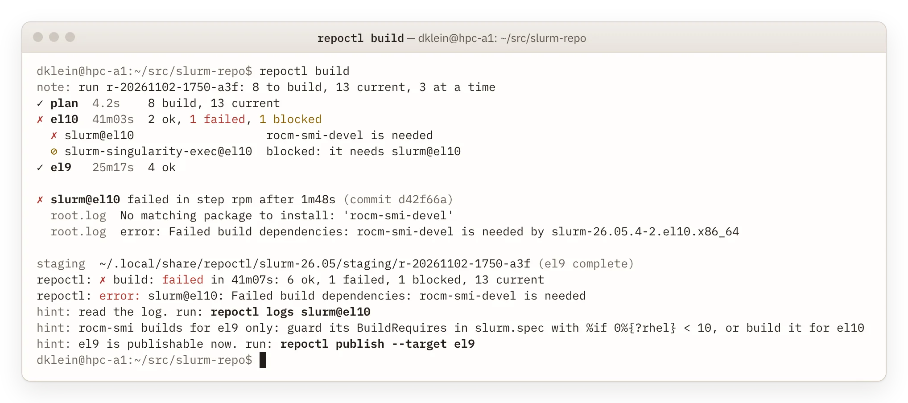
When the run ends, the tree goes away and the step lines stay (logs: Build: logs):
root.log and build.log, each with its log file.%if comes from a rule: a missing BuildRequires that a package of the set provides only on other targets.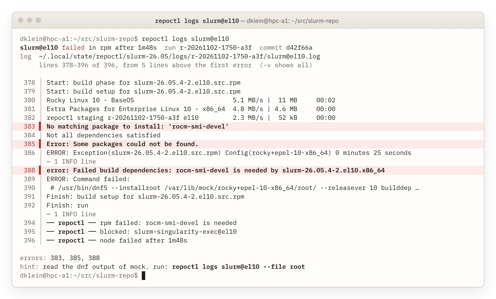
On a terminal, repoctl logs shows a short excerpt for a failed node (calm rules). Error lines have a red bar and a light red band. The header goes to standard error, so repoctl logs … > FILE holds only the log. In a pipe, and with -v, the command writes the whole log.
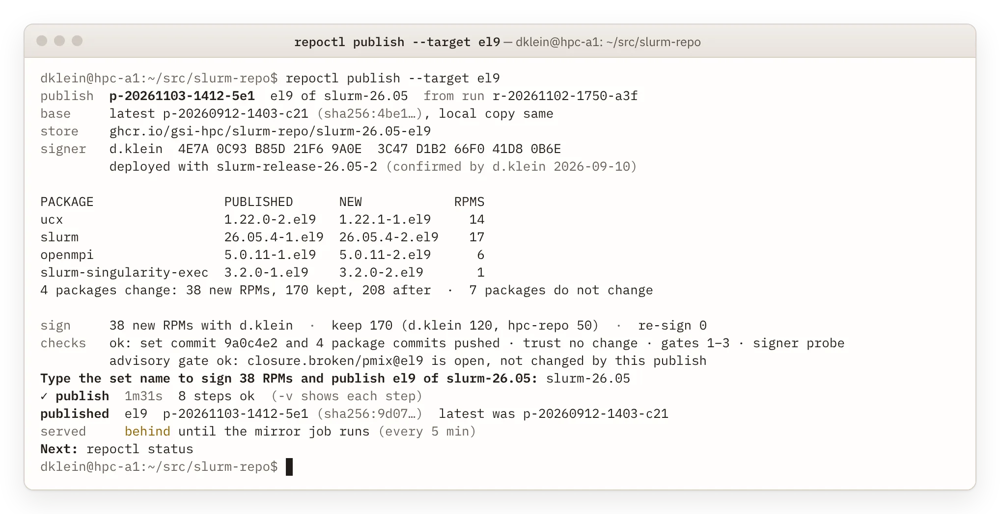
The output of repoctl publish says each fact once (summary and steps: Publish: summary):
closure.broken/pmix@el9 is open, but this publish does not change its closure, so the line has no colour (Advisories: publish gate).-v shows each step, for example push 38s 54 new blobs (412 MiB), 170 known (Publish: order).served stays behind until the mirror job runs. Next: repoctl status shows when the served tree is the same as latest.A target that is not publishable gives a refusal in the fixed end form:
$ repoctl publish --target el10 repoctl: error: el10 is not publishable: slurm@el10 failed, slurm-singularity-exec@el10 is blocked hint: read the log. run: repoctl logs slurm@el10 hint: fix slurm.spec, commit and push it. run: repoctl pin slurm $ echo $? 12
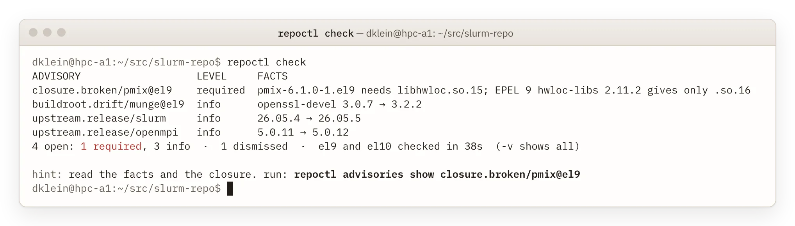
The rows of repoctl check are the open advisories, the required ones first. The subject names the target, so the table has no target column. The dismissed advisory upstream.release/slurm-singularity-exec is only in the count; -v lists it. Behaviour, exit codes and advisory codes: Advisories: check, codes.
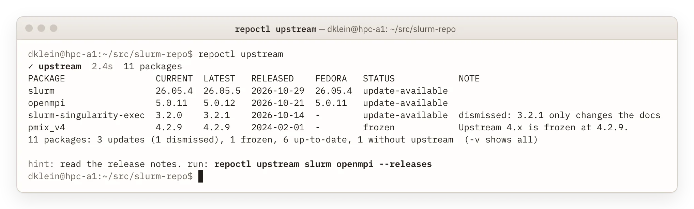
The table of repoctl upstream shows the updates and the frozen stream. Up-to-date packages fold into the totals line. The source of each package (GitHub repository and tag filter) is only in -v and --json. The row of slurm-singularity-exec shows the note of its dismissal. The hint names the two packages with an open update.
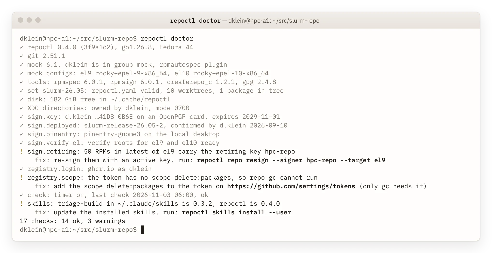
In repoctl doctor, passed checks are dim, so the three warnings stand out. Each warning has its fix directly under it, with the command to copy. The retiring key hpc-repo is a warning here, with repoctl repo resign as the fix (Signing: re-sign).
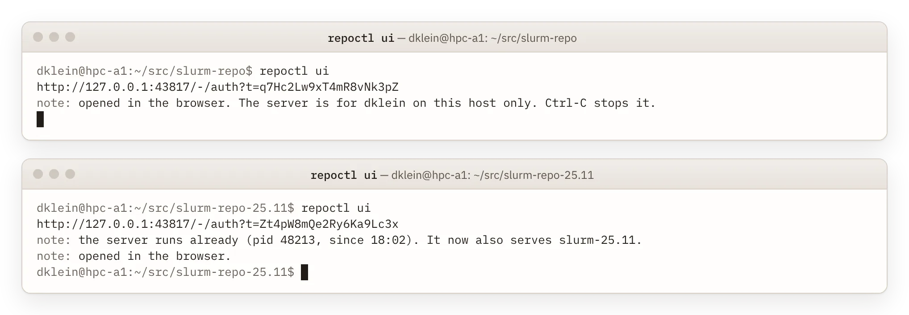
repoctl ui prints one launch address with a one-use token on standard output and opens it in the browser (Web UI: authentication). The server runs in the foreground for the local user only. A second start, also from another set directory, uses the same server and adds the set.
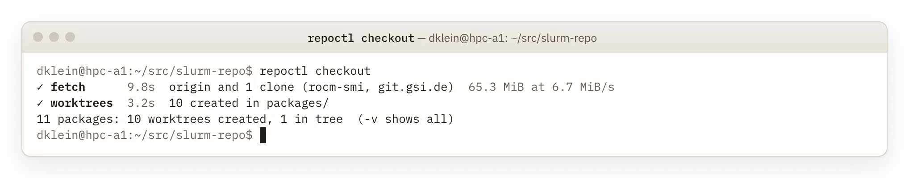
In a new clone, repoctl checkout makes all worktrees in their default place packages/DIR. Thus the table folds into the totals line (external clones: Sets and packages: clones):
worktree.dirty and the hint repoctl pin DIR, and the exit code stays 0.